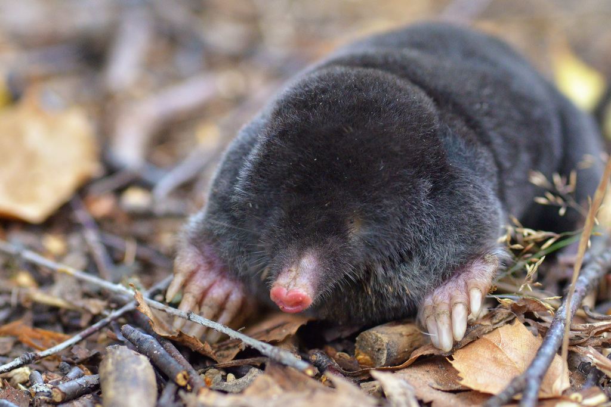

El Topo es un pequeño mamífero que vive bajo tierra y cava túneles.

• Cuerpo pequeño y cilíndrico. • Patas delanteras fuertes para cavar. • Vista muy limitada. • Pelaje suave y oscuro. • Vive en túneles subterráneos.
Los topos se alimentan principalmente de insectos, gusanos y larvas que encuentran bajo tierra.